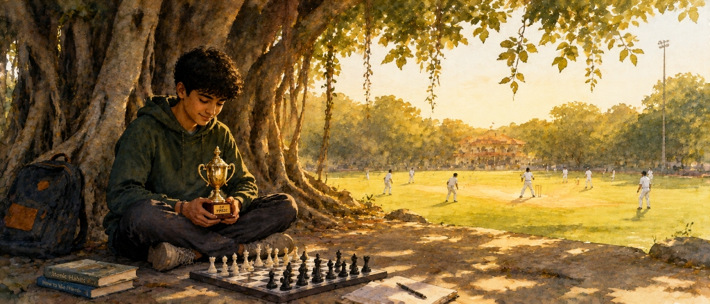
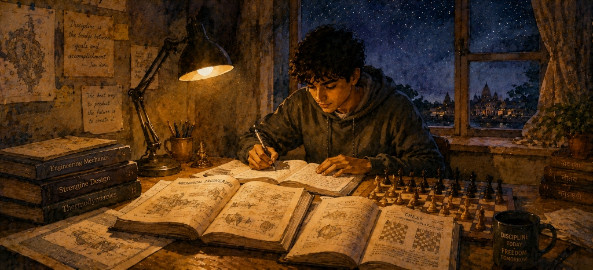
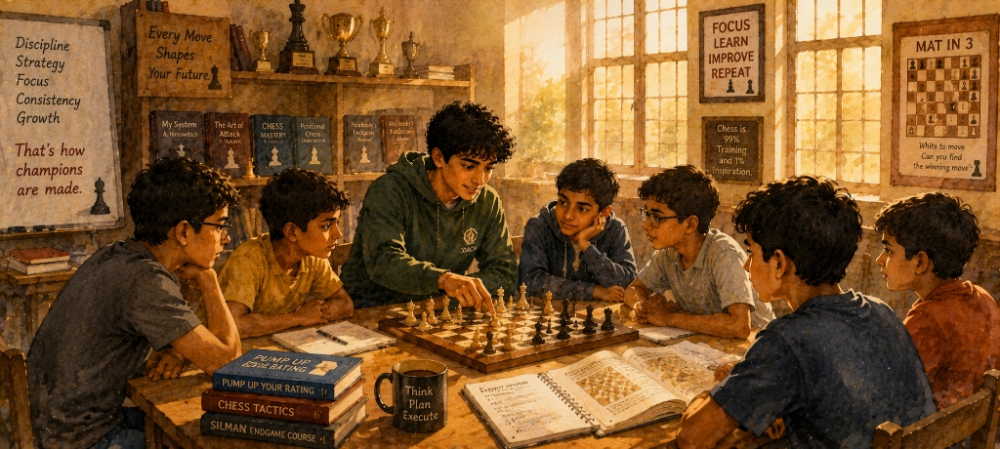
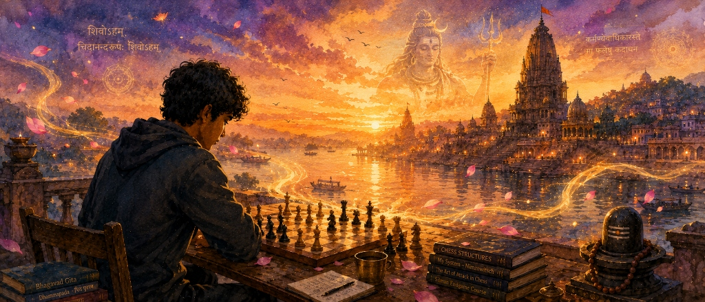

"Destiny rarely announces itself. More often, it waits quietly in an ordinary moment, asking only that you pay attention."
— Ganesh Tajane

Every life has a moment that quietly changes its direction. Mine began on an ordinary evening during my tenth standard. Like most boys my age, I spent my evenings playing cricket with friends. One day, while waiting for my turn to bat, I noticed two boys sitting nearby with a small chessboard between them. They played in complete silence, absorbed in a world that seemed untouched by the noise of the cricket ground. I stood beside them and watched.
The next day, they returned at the same time, and so did I. Day after day, I found myself standing quietly beside them, observing every move they made. They did not teach me, nor did they explain the game. I simply watched, trying to understand what made those sixty-four squares so captivating. Without realizing it, my curiosity was turning into fascination.
Unable to resist it any longer, I asked my father to buy me a chessboard. A few days later, he brought home a simple ₹20 plastic chess set. To most people, it would have seemed insignificant, but to me, it became the doorway to an entirely new world. Inside the box was a folded instruction sheet explaining how each piece moved. I spent hours reading those rules, setting up the board repeatedly, replaying positions, and slowly teaching myself the fundamentals of the game.
Not long afterwards, I learned that my school was conducting a chess tournament. Determined to participate, I joined the selection camp. That was where I met a fellow student who played far better than anyone else I had encountered. Seeing my eagerness to learn, he stayed back with me after school every day. For nearly an hour, he patiently taught me the game—correcting my mistakes, explaining ideas, and helping me see the board in a completely different way. Within just two months, I had improved enough to earn a place on my school's five-member chess team.
Soon came my very first tournament. I walked into the event with little experience and no expectations. Many of the participants were already rated players, while I had only recently discovered the game. Yet move by move, round after round, everything seemed to fall into place. When I lifted the first-prize trophy, I felt something I had never experienced before. It was more than the joy of winning—it was the unmistakable feeling that I had found something that truly belonged to me. Standing there that day, I made a promise to myself that has never faded with time: I would never leave this game. Whatever life had in store for me, chess would always remain a part of it.
"The hardest battles are not fought against the world, but between the life expected of us and the life we know we are meant to live."
— Ganesh Tajane

Winning my first tournament gave me certainty, but it did not make the path ahead any easier. I had discovered what I wanted to dedicate my life to, yet I had no idea how a chess player was supposed to build a career. I didn't know where tournaments were held, whether professional coaching even existed in Nashik, or what it truly meant to pursue the game seriously.
My family belonged to a lower-middle-class household where every rupee mattered. Like countless Indian families, their dream was simple: study well, earn a stable job, and build a secure life. No one in our family had ever chosen an unconventional path; sport was seen as a hobby, not a profession. They were not against my passion, they were simply afraid of the uncertainty that came with it.
Respecting their wishes, I enrolled in a mechanical diploma. I understood the sacrifices my parents were making to pay my fees, and I never wanted their efforts to go to waste. Academically, I always performed well, earning strong grades and reinforcing their belief that education would eventually provide the stability our family needed. Yet even while pursuing my studies, chess never left my mind.
Slowly, I began discovering the chess community in Nashik. I learned that only a handful of tournaments were organized each year, and those events became milestones that I eagerly waited for. Whenever I had the opportunity, I played, though, most of the time I was defeated by players far stronger and more experienced than I was. Those losses taught me an important lesson: playing alone would never be enough. If I truly wanted to improve, I had to study the game.
Through the kindness of a fellow chess enthusiast, I was introduced to my first serious chess books. Those pages opened a completely different world. I began studying positions, analysing games, and understanding that mastery was built long before a tournament ever began. Three years after discovering chess, I played my first All India Open Rating Chess Tournament and earned my initial FIDE rating. It was only the beginning, but it felt like a step into the larger world I had dreamed about.
Even then, reality continued to demand compromise. The financial situation at home meant I could only afford to play one or two tournaments each year. Most of my time was spent attending classes, preparing for examinations, and fulfilling the responsibilities that came with my education. Whenever I wasn't studying, I found time to meet a few close friends in Nashik who shared the same passion. Together we analysed games, practised for hours, and kept our dream alive.
When I completed my diploma with excellent grades, my family wanted me to continue my education through engineering. My heart wanted to choose chess. Before taking admission, I made a promise to my parents: "I will complete my engineering. But after that, I want to give my life to chess. Please don't stop me." They believed time would change my mind; I believed time would prepare me for mine.
"Every meaningful path demands a moment when certainty must be exchanged for faith."
— Ganesh Tajane

When I completed my engineering, the same question returned with even greater force: "Now what?" For my family, the answer was obvious. I had earned a good degree, performed well academically, and it was finally time to build a stable career. They encouraged me to take a job and continue playing chess only in my free time or on weekends. It was sensible advice, but by then, I understood something that I hadn't understood as a teenager.
Chess was not a hobby that could be pursued after office hours. It was an ocean without an end. If I wanted to discover how far I could truly go, I had to dedicate my life to it. Playing one or two tournaments a year while working a full-time job would never allow me to become the player I dreamed of becoming. I shared my thoughts with my parents. They listened patiently, but reality stood firmly on their side.
Our family was still struggling financially. My father worked tirelessly, yet his income was just enough to keep the household running. My parents reminded me that I was now an engineer, and with that degree came responsibility—not only towards my own future, but towards the family that had sacrificed so much for my education. My mother finally said something that changed everything: "If you want to pursue chess, do it. But you must earn your own money, contribute to the family, and fund your own tournaments."
It was a challenge, but also an opportunity. Instead of searching for a job unrelated to the game I loved, I decided to build my life around chess itself. In 2018, soon after completing my engineering, I started my first academy—Pro Chess Academy. It began with only three students. During the day, I taught; at night, I studied chess. Every lesson I prepared made me a better coach, and every position I analysed made me a stronger player. I realised that teaching was not taking me away from chess—it was deepening my understanding of it.
The beginning was far from easy. The academy earned very little, and whatever income came in was shared with my family. There was rarely enough left to travel, pay tournament entry fees, and compete regularly. So I made another difficult decision: before investing in my own playing career, I would first build a foundation strong enough to support it. For nearly two years, I poured almost all my energy into my students. Their improvement became my success. Their victories slowly built trust, and that trust brought more students. Little by little, the academy grew, and with it grew the hope that one day I would finally be able to pursue chess without financial limitations.
By the end of 2019, I had saved enough money to return to tournament chess. In January 2020, I played my first tournament after a long gap. I competed again in February, and for the first time, I had a clear plan—to play tournaments consistently every month and dedicate myself completely to improving as a professional player. Then the world came to a standstill. The COVID-19 pandemic brought every tournament to a halt. My academy was forced to close, my father's work was disrupted, and once again survival became more important than ambition. The savings I had carefully built for my chess journey were now needed to support my family.
For a moment, it felt as though the dream had been pushed further away than ever before. But I refused to let it die. Instead of giving up, I rebuilt everything from the beginning. I shifted my academy online, learning an entirely new way of teaching. Many students could not continue, and I had to start almost from scratch. Slowly, new students joined. The online academy grew stronger, and once again I focused on creating stability before chasing my own competitive ambitions.
When tournaments slowly began to return, I was ready to resume my journey. But fate had one more delay in store. The second wave of COVID-19 brought fresh uncertainty, and my family was deeply worried about my health and safety. After everything we had already endured, they asked me not to travel for tournaments for another year. It was another painful pause, but I understood their concern. Once again, I chose patience over frustration. So I waited, continuing to teach, study, rebuild my academy, save every possible rupee, and prepare for the day I could finally return. The dream never disappeared; it simply grew stronger through every delay.
Then, in 2023, after years of postponing my own competitive journey because of responsibility, financial realities, and a global pandemic, I finally sat across the chessboard once again. This time, I wasn't returning simply to play. I was returning to fulfil a promise I had made to myself years earlier—a promise that no hardship, no setback, and no passage of time had ever been able to extinguish.
"Sometimes the destination we chase is only the road that leads us to the purpose we were truly meant to discover."
— Ganesh Tajane

After years of waiting, rebuilding, and postponing my dreams, I finally reached the moment I had imagined for so long. In 2023, I was ready to begin my journey as a competitive chess player with complete commitment. The academy had become stable, my family no longer depended entirely on uncertainty, and for the first time, I felt that the path ahead was finally clear. Life, however, had another plan.
Around that time, a series of profound spiritual experiences began to unfold—experiences unlike anything I had ever encountered before. Meditation, which had once been a quiet part of my daily life, became something far deeper. My connection with Lord Shiva intensified in ways I could neither explain nor ignore. Looking back, I realised these experiences had not appeared suddenly. Throughout my chess journey, there had been countless moments of unusual stillness, intuition, and inner guidance. I had always felt drawn towards meditation and spirituality, but I treated them as something secondary. Whenever they appeared, I acknowledged them briefly and returned my full attention to chess.
While my coaching continued and I remained committed to supporting my family, much of my inner life shifted towards meditation, self-inquiry, and the worship of Lord Shiva. During this period, I experienced a depth of silence and clarity that words can barely describe. What had begun years earlier as a passion for chess slowly became part of a much larger journey—one that extended far beyond competition. I came to understand that life was asking something different of me. There was a purpose waiting beyond personal success—a responsibility that felt older than ambition itself, a calling I could neither fully explain nor walk away from.
Yet one thing never changed: my love for chess did not disappear. Chess had shaped my mind, taught me discipline, patience, resilience, and the ability to remain calm in uncertainty. Those lessons became invaluable as I stepped into this new chapter of my life. The board had prepared me for a journey I never expected to take.
Today, I no longer see chess as merely a game or even as a profession. It is one of the greatest teachers I have ever known. Whatever I achieve in the years ahead—whether across sixty-four squares or far beyond them—will forever carry the imprint of the game that taught me how to think, how to endure, and how to keep moving forward, one deliberate step at a time. The journey of chess shaped my life; the journey that followed gave it a deeper purpose.